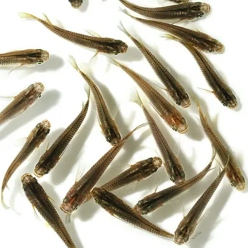
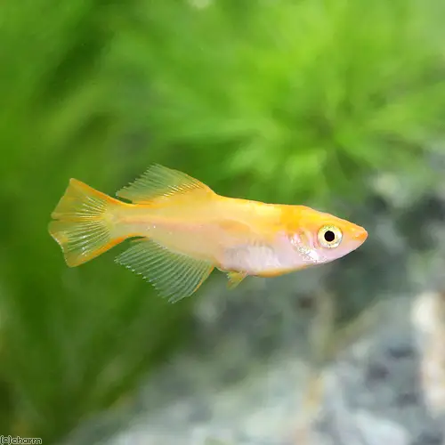
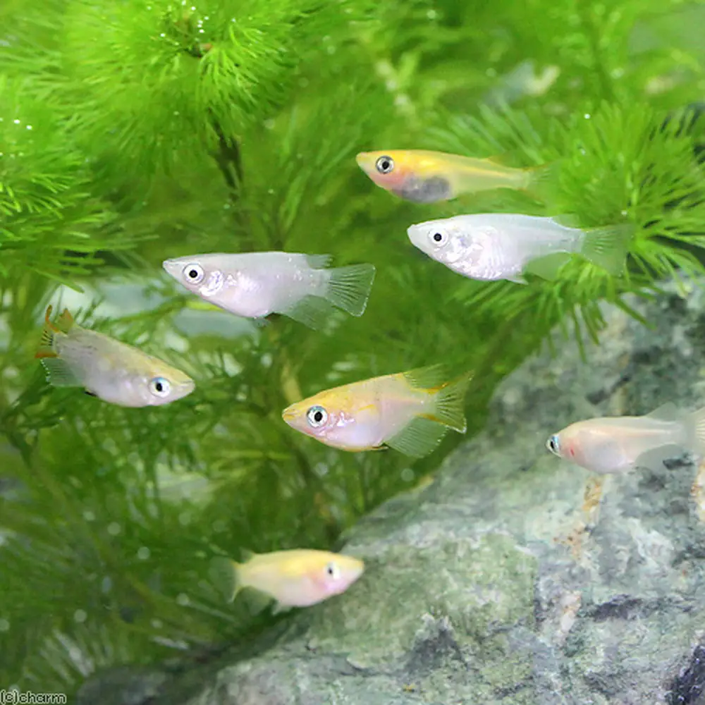
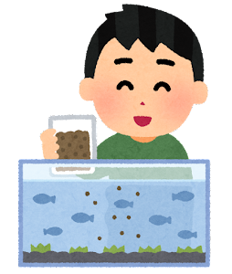

- 自然種体型

野生種と同じ細長い、背びれが狭く短い、胸鰭が小さい、腹びれが広く長い体型。- ヒカリ体型

上下対象な改良体型。ヒカリ体型は華やかに見える改良種が多い。元々は併発していた背に現れる輝く鱗のためにこう呼ばれていたが、現在ではその鱗がなくてもこう呼ばれている。- ダルマ体型

腹部が膨らんでおり、比較的に体が短い改良種。特に水槽など横から観賞できる設備にあった可愛らしい体型。- 
泳ぎが苦手なダルマ体型は、他の品種と買う場合はエサやりなどでの工夫が必要。例えば浮上性と沈下性のエサを混ぜて、どちらにもエサが行き渡らせる様にするとよい。また速さが違う品種同士を混泳させる場合、喧嘩した場合に差が出やす為、広めの容器で飼育し争いそのものが起きないようにするとよい。